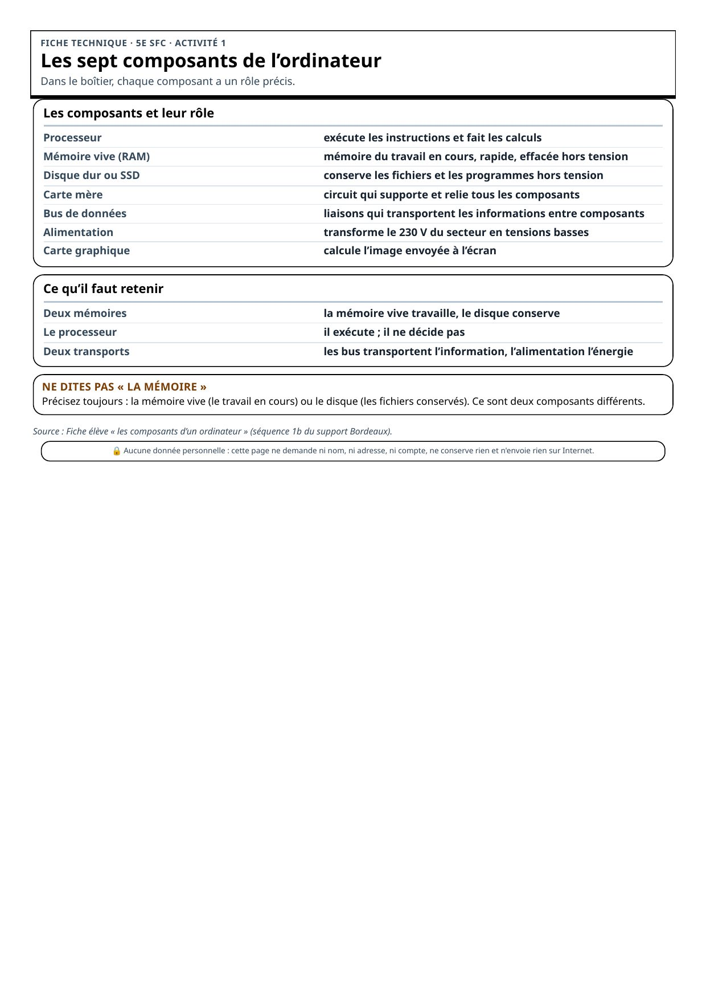
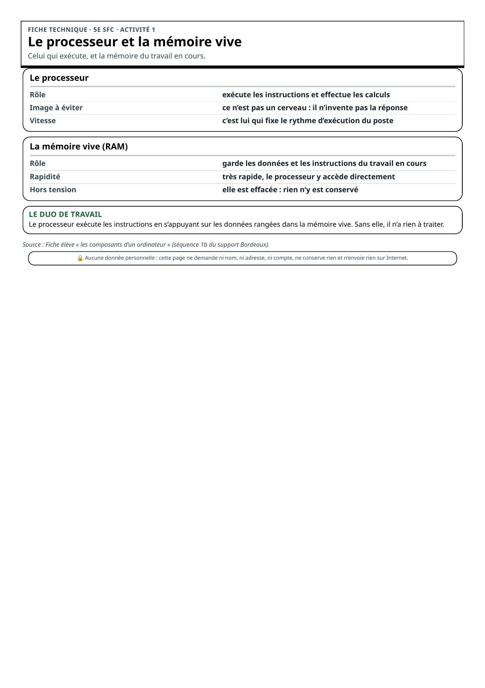
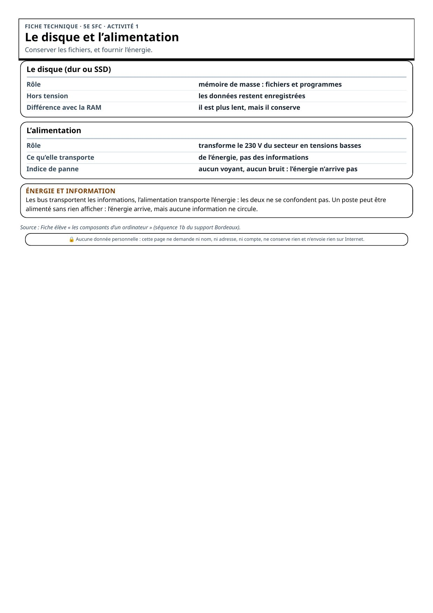
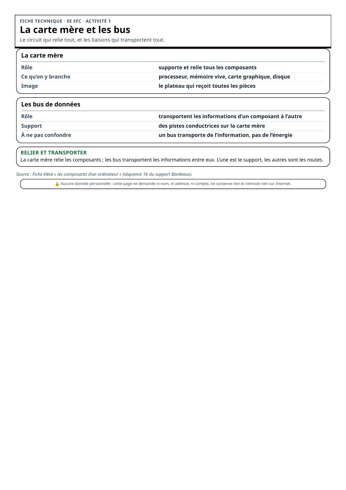
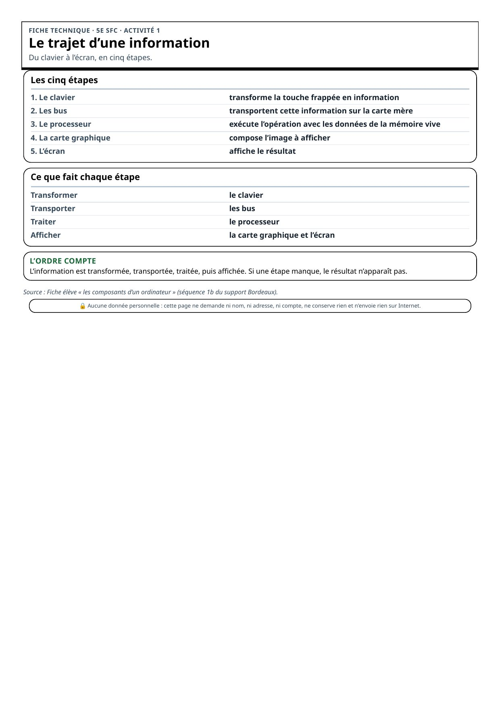
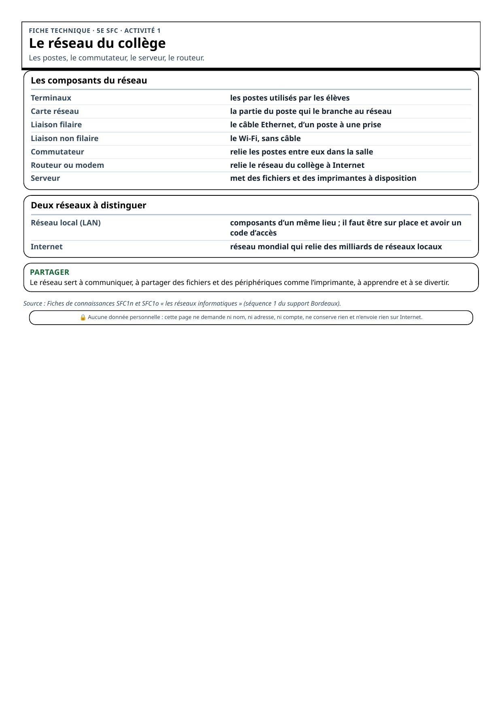
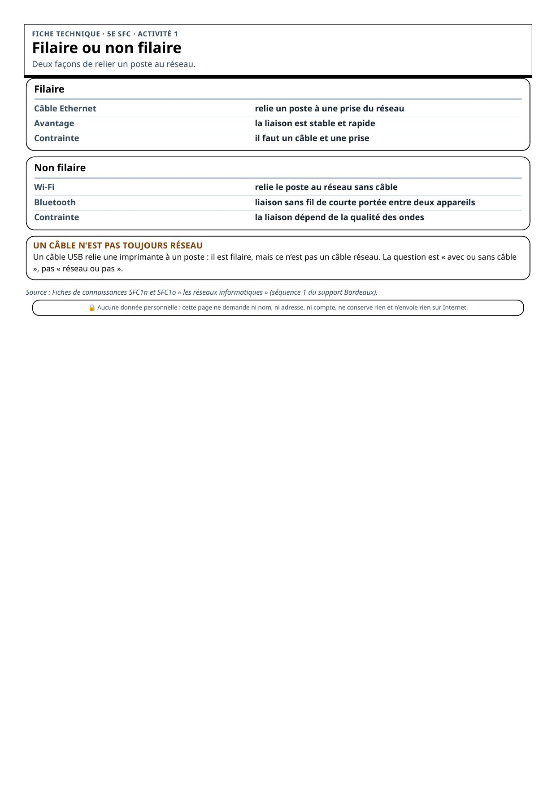
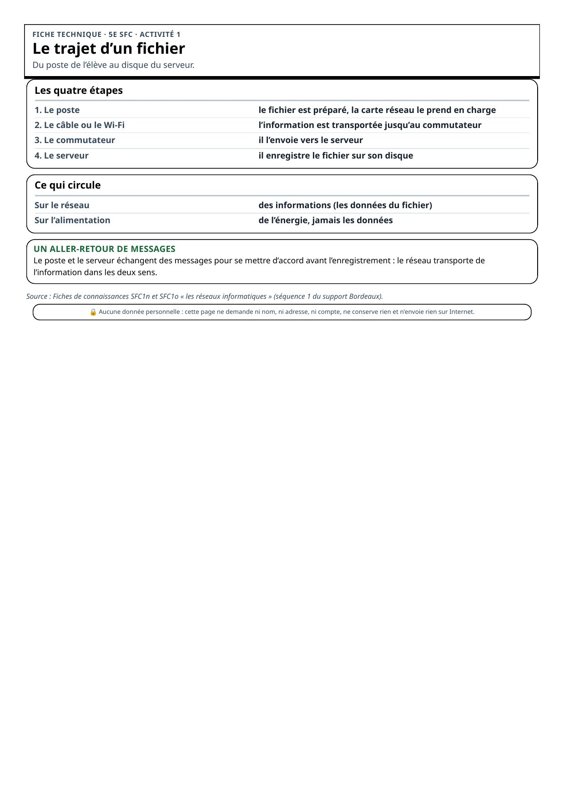

Les sept composants de l’ordinateur
1 / 8

Le processeur et la mémoire vive
2 / 8

Le disque et l’alimentation
3 / 8

La carte mère et les bus
4 / 8

Le trajet d’une information
5 / 8

Le réseau du collège
6 / 8

Filaire ou non filaire
7 / 8

Le trajet d’un fichier
8 / 8
